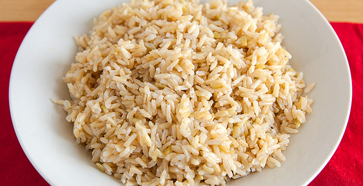

A keto diet is well known for being a low carb diet, where the body produces ketones in the liver to be used as energy. It’s referred to as many different names – ketogenic diet, low carb diet, low carb high fat (LCHF), etc. When you eat something high in carbs, your body will produce glucose and insulin. Glucose is the easiest molecule for your body to convert and use as energy so that it will be chosen over any other energy source. Insulin is produced to process the glucose in your bloodstream by taking it around the body. Since the glucose is being used as a primary energy, your fats are not needed and are therefore stored. Typically on a normal, higher carbohydrate diet, the body will use glucose as the main form of energy. By lowering the intake of carbs, the body is induced into a state known as ketosis. Ketosis is a natural process the body initiates to help us survive when food intake is low. During this state, we produce ketones, which are produced from the breakdown of fats in the liver. The end goal of a properly maintained keto diet is to force your body into this metabolic state. We don’t do this through starvation of calories but starvation of carbohydrates. example frittata recipe Our bodies are incredibly adaptive to what you put into it – when you overload it with fats and take away carbohydrates, it will begin to burn ketones as the primary energy source. Optimal ketone levels offer many health, weight loss, physical and mental performance benefits.
A growing number of experts claim short fasts can accelerate fat loss and make you healthier. So we spent 6 months testing the most popular Intermittent Fasting (IF) protocols ourselves. Find out what IF is, whether you should do it, and if so — how. For years, Dr. John Berardi, Chief Science Officer of Precision Nutrition, has advocated frequent meals, spaced 3-4 hours apart, consisting of nutrient-dense, healthy food. That strategy — when combined with a smart exercise program and world-class coaching — has helped thousands of our clients drop over 120,000 pounds of fat in the last ten years. Proponents of IF, on the other hand, eschew the idea of eating so frequently. Many claim to have achieved quicker fat loss and better health by deliberately skipping meals and sometimes going entire days without eating. The IF research is still in its infancy — indeed, it may be 5-10 years before it reaches critical mass and becomes a mainstream nutritional idea — but in certain quarters, the benefits of intermittent fasting have reached almost mythical proportions. With research lagging behind at a snail's pace, but enough anecdotal evidence to go off of, we decided to do what we do here at Precision Nutrition: test it ourselves. Here's what Dr. Berardi found, in his own words. Why Experiment With Intermittent Fasting? I'm a professional dieter. In other words, I've done nearly every diet or nutritional protocol that's around to test its efficacy. Intermittent fasting has a very small, yet strong, following and enough research to pique my curiosity. I wanted to test it myself to see what kinds of physiological and psychological changes would come from it. Also, as a competitive, masters-level track athlete and life-long fitness enthusiast, I wanted to test a new way to drop fat and get extremely lean, while staying strong and powerful.

HOW DOES CARB CYCLING BURN FAT? Carb cycling can work great for weight loss. On your low carb days, you'll lose fat. Lowering your carbohydrate intake also increases insulin sensitivity, which is associated with better body composition (i.e. lower body fat).2 High carb days cause your body to burn more calories. They also increase leptin, the hormone that keeps you from being hungry. These two effects prevent the low-carb days from stalling your metabolism and leading to a binge, so you can keep losing weight.3 REACHING A PLATEAU Eventually, you will likely reach a fat-burning plateau and will have to change things up a bit. When that happens, have 3-4 high-carb days in a row, or have a cheat meal one day. This will jumpstart your metabolism, enabling the fat burning process to resume. Another way to turn your weight loss back on is to go to zero carbs for three days. This is the only time to take fibrous vegetables into consideration, as no carbs whatsoever should be ingested during the three zero-carb days. WHAT KIND OF CARBS SHOULD YOU EAT WHEN CARB CYCLING? Always use carbs from clean foods, not junk foods. Eat the majority of your carbs early in the day and at the post-workout meal, tapering off as the day goes on. Don't worry about the glycemic index of the foods, just focus on keeping total carb intake for the day at your target level.
SOURCES OF CLEAN CARBS These are the best sources of clean carbs to include in your meal plan when dieting in general, and when you carb cycle:- Baked potatoes
- Sweet potatoes
- Rice
- Oatmeal
- Cream of wheat
- Grits
- Squash
- Apples
- Peas
- Corn
- Bananas
- Rice cakes
- Beans
- Quinoa
- Berries
What Is It? IIFYM simply means eating a diet that meets your macronutrient needs. To break it down and start from the beginning, macronutrients are the three main food groups – proteins, carbohydrates and fats. Each macronutrient has its own role to play, and is needed in different quantities depending on your goals, metabolism, training history, and many other factors. IIFYM eating flies in the face of conventional dieting, and the notion that anyone who wants to get in shape has to eat a stringent diet, composed of a limited number of so-called “clean foods,” needs to eat at precise times throughout the day, must have certain types of food pre and post workout, and that any deviation from this strict structure is breaking the rules of dieting. The idea of IIFYM is simple – you eat whatever foods you like the fill your allotment of proteins, carbs and fats. So I Can Eat Whatever I Like And Get In Shape? On the face it may seem that way, but actually it’s far from it.
There are several issues in thinking this:- If you’re cutting, and have a macronutrient intake of 250 grams of protein, 150 grams of carbs and 75 grams of fat, good luck filling your macros with poptarts, chips, burgers and fries. To get that much protein while restricting carbs and fat, you’re still going to have to rely on a lot of bodybuilding staples – lean meat, fish, dairy products, oats, potatoes and veggies, etc. Sure, if you have room to fit the odd junk food snack into your day, by all means go for it, but don’t kid yourself you can spend all day eating whatever you please.
- Staunch proponents of IIFYM dieting are also serious about food quality. Dieters will set a minimum fiber intake (usually around 20-25g for women and 30-35g for men) which will necessitate lots of vegetables, pulses, fruits and minimal processed sugar.
- If you do get all your calories from junk, you’ll probably feel pretty damn lousy – definitely not what you want before a heavy squat session.